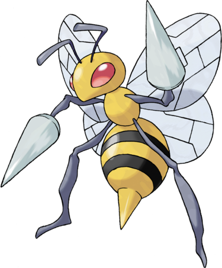

Coconfort est en fait un Pokémon enveloppé dans une armure marron clair attendant son évolution. Il est inspiré d'une nymphe de guêpe, c'est-à-dire son stade entre la larve et l'adulte. Il a deux dards sous sa tête triangulaire, précurseurs de sa future évolution en Dardargnan. Il a deux yeux noirs à pupille blanche.<